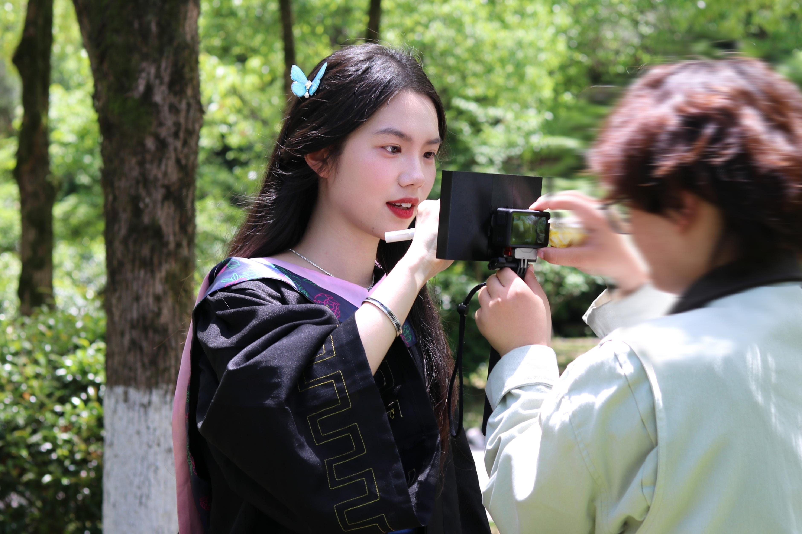

还记得那个夏天蝉鸣的夜晚吗，我们的故事就在这样普普通通的一天中真正的悄悄开始。
你像一首写不完的诗，温柔地占据我二分之一的大学时光。谢谢你的出现，让我原本平凡的生活都增添了一份期待。
这是我送给你的第三个礼物，不仅仅是生日礼物，也是我送给你的毕业礼物。虽然其中含有技术的成分，但是俗话说技术是人的延伸，是的没错，其实我是二十一世纪的麦克卢汉来的。⌯'▾'⌯
欢迎来到炉子和雨子的小world🌏
我们


我们的故事开始于
✨ 时光跷跷板 ✨
📱 2023.11.30
第一次加上微信好友
🏮 2023.12.24
第一次组队在徽州古城拍摄/第一次大合照！
🍬 2024.1.4
第一次给我送999中
👗 2024.3.14
一句“想你帮我看看衣服”拉开我们友谊的小门！
📸 2024.4.27
陪拍ing
🍔 2024.5.11
陪我去吃汉堡！呜呜~是看出来我特别想吃才去的
🎨 2024.5.14
对不起，给你染了一个不匀的头发
🎬 2024.6.8
拍大广赛视频ing
🏯 2024.6.17
去西递见习噜！
💼 2024.7.10
开始绩溪漫长的实习了૮₍ •︡_ •︠ ₎ა
🎤 2024.11.21
去KTV！此刻我们决定去广州了！！！
✈️ 2024.11.29
此刻我们进入广州了！开启比赛ing（ps：肥妈我想你！！555广州好幸福）
🎆 2024.12.31
2024年最后一天，我们在看电影哦
🌧️ 2025.3.12
今天去太平洋采访噜！当天还在下雨
🍲 2025.3.23
今天在和芳芳老师一起聚餐哦~ip在徽三说
⛰️ 2025.4.4
不好意思，此刻在太平！！！
✂️ 2025.4.11
剪头发去了..变成了高高高层次啊
🏨 2025.4.16
今天在香茗假日酒店-其实是我忘记了具体是啥名字了hhh我们去沉浸式了，还有视频作业呢
🌾 2025.10.2
瞬移到碧山了
📷 2025.10.25
今天在拍学习网的照片-好伤心 我的不好看
🐰 2025.11.26
考研期间抽空去看疯狂动物城2！好看！
🍣 2026.2.2
打卡滨寿司中
🇭🇰 2026.2.3
ip：香港 雨子生理期第一天中 并且我俩在香港机场度过了“难忘”的第一个晚上啊
🇸🇬 2026.2.4
那又怎样~因为我们到新加坡了
🇲🇾 2026.2.7
ip：马六甲 这里的我们俩都美美的 马六甲我们喜欢你
🌟 2026.2.8
ip：吉隆坡 确实小小吓人
🧋 2026.2.10
ip：澳门 奶茶好喝！
📚 2026.3.29
陪炉子准备复试中
🎓 2026.5.10
答辩准备！
🎓 2026.5.11
美美拍毕业照啦！！
💞 2026.6.9
今天我们见面了

🎧 点击播放按钮，聆听回忆旋律
从相识到相知，时间把我们的名字刻在同一颗星星上。
LCX ❤️ WSY 的四季与朝夕。